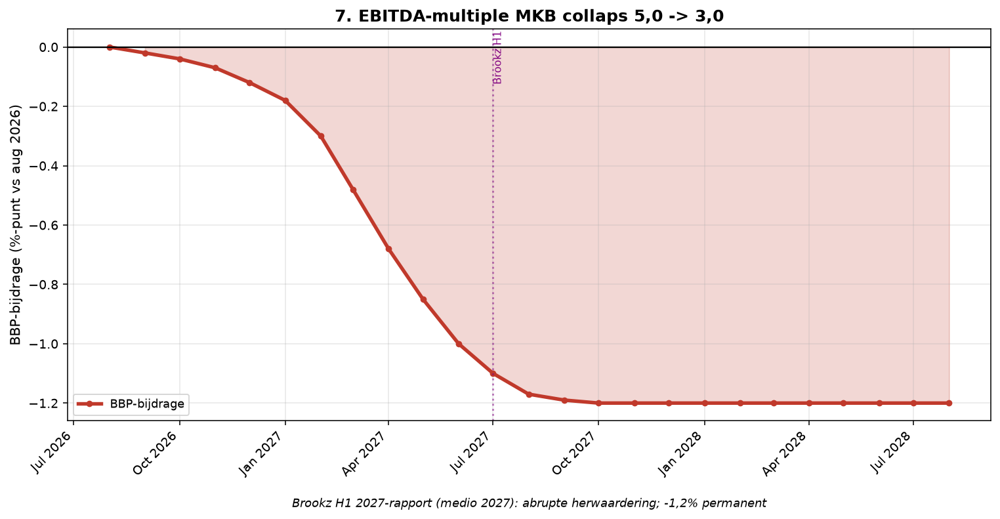

Element 7 — EBITDA-multiple collaps (opschmuck-mechaniek)
Breuk-element 7 van 28 in de systeemanalyse Nederland aug 2026 – aug 2028.
Door Jacobus van Merksteijn

Grafiek: EBITDA-multiple collaps (opschmuck-mechaniek).
7.1 De EBITDA-multiple 5,0 record
Brookz Overname Barometer H2 2025: EBITDA-multiple NL-MKB = 5,0 =
hoogste sinds meting-start 2015 (Brookz.nl). Ter vergelijking: 2015-2018
gemiddelde 3,5-3,8. 2020-2022 (COVID + herstel): 4,0-4,3. 2023-2024:
4,5-4,7. H2 2025: 5,0.
Waarom niet organische groei?
De NL-economie groeide 2024 met 1,0%, 2025 met 0,8% (CBS). Winstgroei
MKB-bedrijven bleef gemiddeld onder inflatie. Aandelenwaarderingen op
NL-beurs (AEX) stegen niet uitzonderlijk. De multiple-piek 5,0 is dus
geen fundamentele waardestijging maar mechanisme-vertekening.
7.2 Het opschmuck-mechaniek concreet
Ondernemers die willen verkopen doen het volgende om EBITDA hoger op de
balans te krijgen (ondernemer-observatie augustus 2026):
- Personeel op ZZP-basis converteren: lasten dalen 30-40%, EBITDA stijgt met vergelijkbare marge
- Voorraad bijboeken naar historische inkoopprijs in plaats van huidige marktwaarde (voorraad-fictie)
- Debiteuren-verlies voorziening minimaal houden (te goeder trouw)
- Privévermogen als lening aan het bedrijf, EBITDA voor rentelasten optellen
- Onderhoud uitstellen: OPEX daalt tijdelijk, activa blijven op boekwaarde staan
- Personeel niet vervangen, blijvende vacatures niet meetellen als "operational leverage" ruimte
- Waarde-toevoegende R&D-uitgaven "capitaliseren" i.p.v. direct kosten
- Overheidsstimulus (WBSO, energiesubsidies) meetellen als structureel resultaat
Effect: EBITDA wordt kunstmatig 30-50% hoger gepresenteerd dan
marktconform. Multiple × EBITDA = verkoop-vraagprijs. Bij multiple 5,0
en EBITDA-inflatie 40%: vraagprijs = 5,0 × 1,40 × werkelijke EBITDA =
7,0 × werkelijke EBITDA.
7.3 Waarom collaps H1 2027 onvermijdelijk is
Zodra Lengers-type faillissementen zichtbaar maken hoe groot de
balans-fictie is (€100 mln → €10-15 mln liquidatie = 85-90% verlies),
gaan kopers geen 7,0× EBITDA meer betalen. Nieuwe markt-multiple daalt
naar 3,0-3,5× (realistische marktwaarde). Effect:
- MKB-eigenaars die 2025-2026 opschmuck hebben ingezet en willen verkopen 2027: geen kopers meer
- Verkoopondernemers moeten kiezen: bedrijf failliet laten gaan, of privévermogen inzetten om liquiditeit vast te houden
- Balans-fictie wordt zichtbaar bij faillissement of bij lagere verkoop-prijs dan boekwaarde
- Grote overname-partijen (private equity) gaan wachten tot markt collapt om goedkoop op te kopen
- Vermogenseffect: ~50k NL-MKB × gemiddeld €500k-€2 mln verlies = €25-100 mrd verdwenen vermogen 2027-2028
7.4 Bronnen
• Brookz Overname Barometer H2 2025: EBITDA-multiple 5,0 --- https://www.brookz.nl/barometer/h2-2025
{width="6.5in" height="3.3736876640419946in"}
EBITDA-collaps H1 2027: abrupte herwaardering; -1,2% permanent